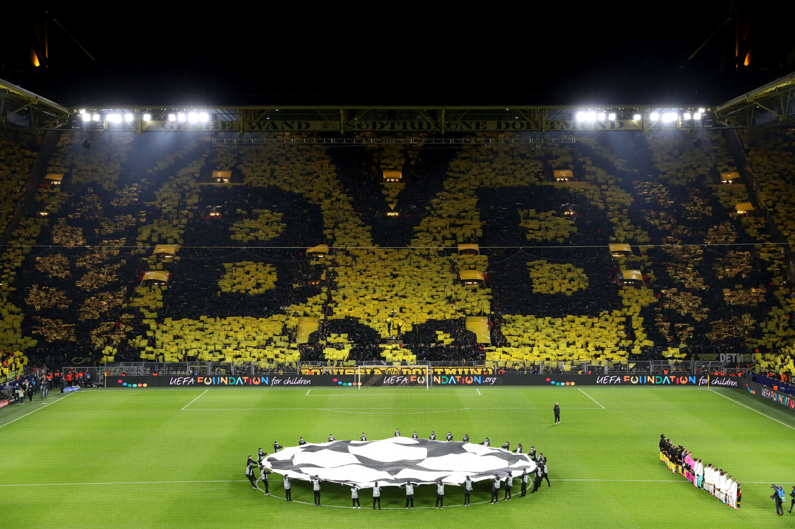

Muralha Amarela, a alma do Borussia Dortmund
A muralha amarela. É assim que as pessoas costumam se referir ao Borussia Dortmund quando assistem a uma partida do clube. Isso, obviamente, graças ao paredão de torcedores apaixonados e vestidos com a tradicional camisa da equipe, os quais lotam as arquibancadas do Signal Iduna Park, um dos maiores estádios de futebol do mundo.

Considerada uma das maiores e mais apaixonada torcida da Europa e com a maior média de público do mundo desde 1998, o Borussia Dortmund conta com o apoio de sua grandiosa torcida, a Muralha Amarela, em todos os jogos em casa. O clube é o único a ultrapassar a marca de 80 mil pessoas em uma partida, chegando a ocupar 99,7% da sua capacidade total de seu estádio, o Signal Iduna Park.
Muitos turistas vão até a cidade para assistir aos jogos e ver de perto o show a parte da maior geral do mundo: a Südtribüne ( Tribuna sul – setor reservado para a organizada do time). Com seus espetáculos a parte, seja cantando em uma só voz a música que embala o time “You’ll Never Walk Alone”, que significa: “Você nunca andará sozinho” ou com seus grandiosos e inusitados mosaicos, a torcida acabou tornando-se a alma do clube.
Desde que o estádio foi inaugurado em 1974, a geral esteve presente e sua estrutura permanece a mesma, são 25 mil lugares apenas na tribuna sul. Muitos jogadores que já jogaram contra o Borussia Dortmund afirmaram sentir-se intimidados com a grandeza da torcida, olhando do gramado a tribuna sul parece um grande muro amarelo, daí então surgiu o nome “die gelbe Wand”, Muralha Amarela em português.
Por sua paixão e devoção ao clube a Muralha Amarela é o orgulho dos próprios membros do clube e dos outros torcedores que não acompanham os jogos da Südtribüne. Ao final de todas as partidas, independente do resultado, os jogadores do time se reúnem à beira do gramado, em frente a torcida e agradecem com gestos que já viraram marca registrada. Eles aplaudem, reverenciam a torcida, sentam no gramado e depois comemoram cantando junto aos torcedores.
Um episódio que emocionou não só Auri-negros, mas o mundo inteiro foi na partida contra o Liverpool, válida pelas quartas de finais da Europa League. Na ocasião ambas as torcidas se uniram e cantaram a música “You’ll Never Walk Alone”, música que também é tema dos torcedores dos Reds, para homenagear as vítimas da tragédia de Hillsborough, que completava 27 anos em abril do ano passado. Tal ato resultou no prêmio FIFA Fan Awards, prêmio criado para homenagear as melhores torcidas, entregue em janeiro deste ano aos torcedores escolhidos para representar os clubes.
Após a tragédia em Hillsborough, no jogo entre Liverpool e Nottingham Forest, onde 96 torcedores do Liverpool morreram pisoteados e outras 766 pessoas ficaram feridas, muito se foi contestado sobre a permanência da geral na Europa. No entanto, na Alemanha, torcedores se uniram e conseguiram manter o setor popular. Porém, para que se mantivesse o setor popular em Dortmund, foi necessária a criação de um departamento que cuidasse da torcida. Neste departamento há um responsável pelas viagens da organizada e distribuição dos ingressos, outro cuida da festa organizada na arquibancada, um terceiro cuida da vendas de produtos oficiais da Muralha Amarela, e por fim há um responsável por cuidar da segurança da Tribuna Sul, todos os departamentos têm vínculos e são gerenciados pelo clube. Tudo isso reflete dentro e fora de campo, fazendo com que o espetáculo permaneça acontecendo.
REFERÊNCIAS:
https://www.torcedores.com/noticias/2017/03/muralha-amarela